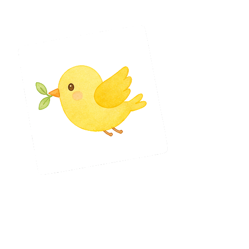
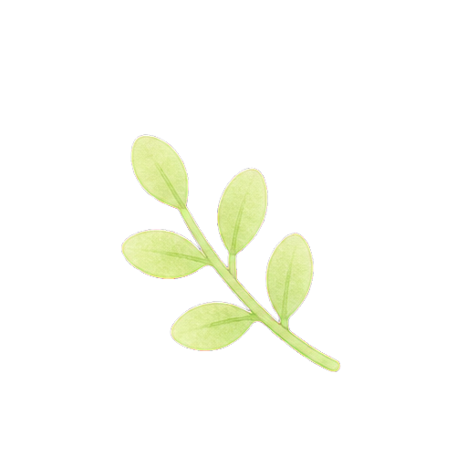
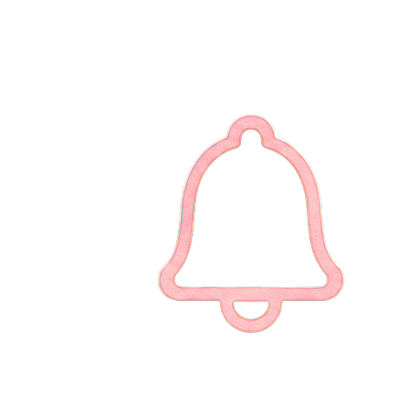
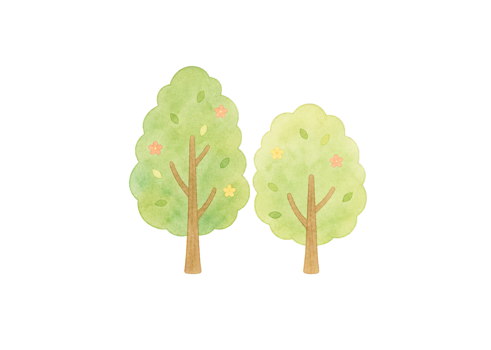

豊かな自然環境
のびのびと体を動かし、自然とのふれあいを大切にしています。
›やさしさ つよさ
子どもたち一人ひとりの個性を大切にし、
心も体も健やかに育つ環境をつくります。




重要なお知らせ重要令和7年度 入園説明会のお知らせ
6月15日(日)に入園説明会を開催します。詳しくはこちらをご確認ください。


愛され、見守られ、
自分らしく育つ毎日を。
愛児幼稚園は、家庭や地域とのつながりを大切にしながら、 子どもたちの「やってみたい！」という気持ちを育みます。
豊かな体験を通して、思いやりの心とたくましく生きる力を育てていきます。
教育について詳しく見る


愛児幼稚園は、これからも子どもたちの成長を見守り続けます。